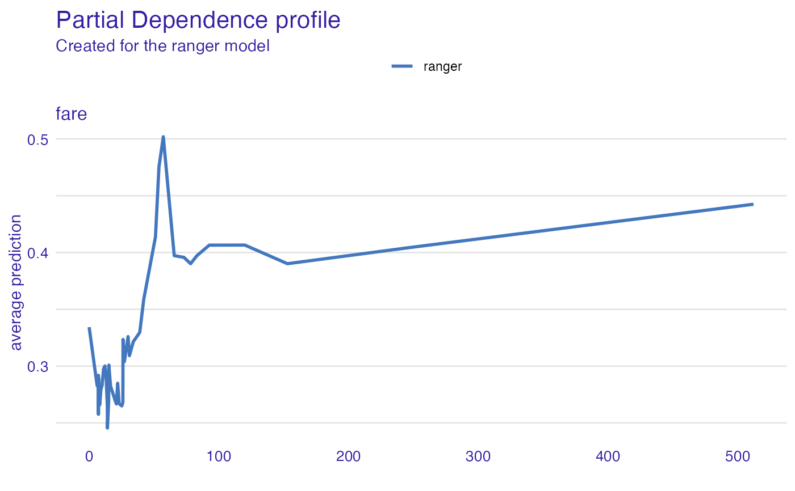
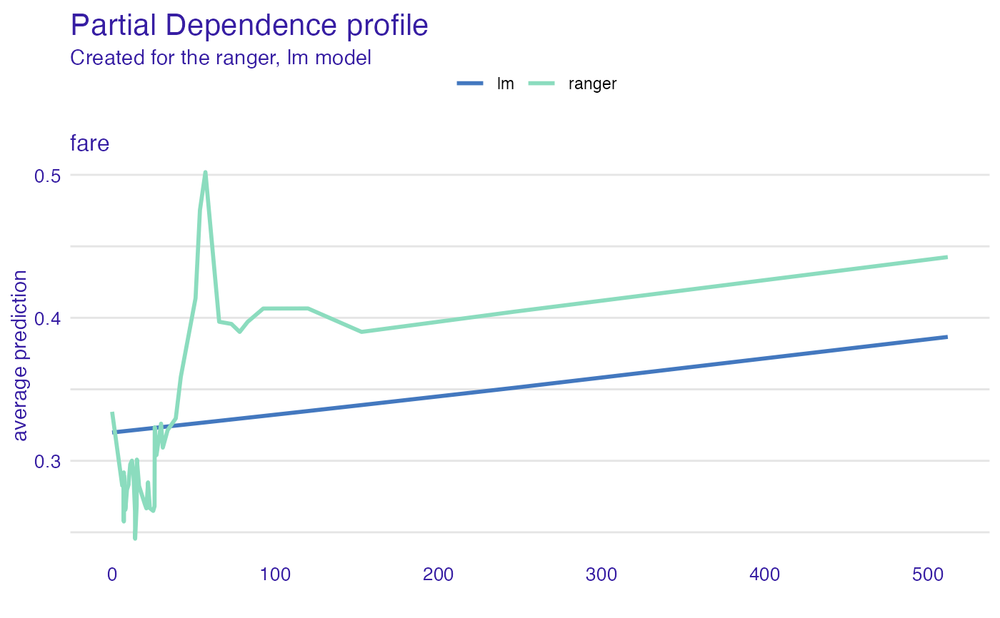

Dataset Level Variable Effect as Partial Dependency Profile or Accumulated Local Effects
Source:R/model_variable_effect.R
variable_effect.RdFrom DALEX version 1.0 this function calls the accumulated_dependence or
partial_dependence from the ingredients package.
Find information how to use this function here: https://pbiecek.github.io/ema/partialDependenceProfiles.html.
variable_effect(explainer, variables, ..., type = "partial_dependency") variable_effect_partial_dependency(explainer, variables, ...) variable_effect_accumulated_dependency(explainer, variables, ...)
Arguments
| explainer | a model to be explained, preprocessed by the 'explain' function |
|---|---|
| variables | character - names of variables to be explained |
| ... | other parameters |
| type | character - type of the response to be calculated. Currently following options are implemented: 'partial_dependency' for Partial Dependency and 'accumulated_dependency' for Accumulated Local Effects |
Value
An object of the class 'aggregated_profiles_explainer'. It's a data frame with calculated average response.
References
Explanatory Model Analysis. Explore, Explain, and Examine Predictive Models. https://pbiecek.github.io/ema/
Examples
titanic_glm_model <- glm(survived~., data = titanic_imputed, family = "binomial") explainer_glm <- explain(titanic_glm_model, data = titanic_imputed)#> Preparation of a new explainer is initiated #> -> model label : lm ( default ) #> -> data : 2207 rows 8 cols #> -> target variable : not specified! ( WARNING ) #> -> predict function : yhat.glm will be used ( default ) #> -> predicted values : numerical, min = 0.008128381 , mean = 0.3221568 , max = 0.9731431 #> -> model_info : package stats , ver. 4.0.2 , task classification ( default ) #> -> model_info : Model info detected classification task but 'y' is a NULL . ( WARNING ) #> -> model_info : By deafult classification tasks supports only numercical 'y' parameter. #> -> model_info : Consider changing to numerical vector with 0 and 1 values. #> -> model_info : Otherwise I will not be able to calculate residuals or loss function. #> -> residual function : difference between y and yhat ( default ) #> A new explainer has been created!expl_glm <- variable_effect(explainer_glm, "fare", "partial_dependency")#> Warning: 'variable_effect()' is deprecated. Use 'DALEX::model_profile()' instead. #> Find examples and detailed introduction at: https://pbiecek.github.io/ema/# \donttest{ library("ranger") titanic_ranger_model <- ranger(survived~., data = titanic_imputed, num.trees = 50, probability = TRUE) explainer_ranger <- explain(titanic_ranger_model, data = titanic_imputed)#> Preparation of a new explainer is initiated #> -> model label : ranger ( default ) #> -> data : 2207 rows 8 cols #> -> target variable : not specified! ( WARNING ) #> -> predict function : yhat.ranger will be used ( default ) #> -> predicted values : numerical, min = 0.01204762 , mean = 0.3220649 , max = 0.9975482 #> -> model_info : package ranger , ver. 0.12.1 , task classification ( default ) #> -> model_info : Model info detected classification task but 'y' is a NULL . ( WARNING ) #> -> model_info : By deafult classification tasks supports only numercical 'y' parameter. #> -> model_info : Consider changing to numerical vector with 0 and 1 values. #> -> model_info : Otherwise I will not be able to calculate residuals or loss function. #> -> residual function : difference between y and yhat ( default ) #> A new explainer has been created!expl_ranger <- variable_effect(explainer_ranger, variables = "fare", type = "partial_dependency") plot(expl_ranger)# Example for factor variable (with factorMerger) expl_ranger_factor <- variable_effect(explainer_ranger, variables = "class")#># }